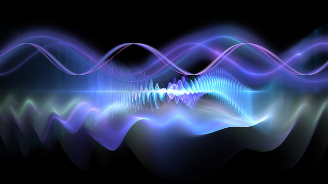

Elektron
ika
Bosh sahifa
Materiallar
Video darslar
Haqida
Bosh sahifa
Materiallar
Video darslar
Haqida

O'quv materiallari
Elektronika va Sxemalar
Materiallar
Barcha o'quv materiallari va qo'llanmalar bir joyda!
Materiallarni ko'rish
Sillabus
Sillabus
Sillabus 2024-25
Laboratoriya ishlari
Laboratoriya ishlari (6 ta)
1-Laboratoriya: Kirish
2-Laboratoriya: Elektr zanjirlar
3-Laboratoriya: Yarimo'tkazgichlar
4-Laboratoriya: Tranzistorlar
5-Laboratoriya: Mantiqiy sxemalar
6-Laboratoriya: Raqamli elektronika
Maruzalar
O'zbek tili maruzalari (21 ta)
1-Maruza: Elektronika va sxemalar kirish
2-Maruza: Elektr zanjirlar va asosiy qonunlar
3-Maruza: O'zgaruvchan tok zanjirlari
4-Maruza: Yarimo'tkazgich elementlar
5-Maruza: Diodlar va to'g'irlagichlar
6-Maruza: Tranzistorlar
7-Maruza: Kuchaytirgichlar
8-Maruza: Operatsion kuchaytirgichlar
9-Maruza: Mantiqiy elementlar
10-Maruza: Triggerlar
11-Maruza: Registrlar va hisoblagichlar
12-Maruza: Xotira qurilmalari
13-Maruza: Raqamli-analog o'zgartirgichlar
14-Maruza: Mikrokontrollerlar asoslari
15-Maruza: Sensor va aktyuatorlar
16-Maruza: Impuls manbalari
17-Maruza: Filtrlar
18-Maruza: Generatorlar
19-Maruza: Modulyatsiya va demodulyatsiya
20-Maruza: Aloqa qurilmalari
21-Maruza: Zamonaviy elektronika ilovalari
Resurslar
O'quv qo'llanmalar (5 ta)
Majmua: Elektronika va Sxemalar
Majmua: Elektr va magnetizm
Majmua: Elektrodinamika
Majmua: Elektronika o'quv qo'llanma
Majmua: Umumiy fizika
Ruscha materiallar
Лекции (22 та)
1-Лекция: Введение в электромагнитные поля
2-Лекция: Электростатическое поле
3-Лекция: Проводники в электростатическом поле
4-Лекция: Диэлектрики в электростатическом поле
5-Лекция: Энергия электростатического поля
6-Лекция: Постоянный электрический ток
7-Лекция: Магнитное поле постоянного тока
8-Лекция: Магнитное поле в веществе
9-Лекция: Электромагнитная индукция
10-Лекция: Индуктивность и взаимная индуктивность
11-Лекция: Энергия магнитного поля
12-Лекция: Переменный электрический ток
13-Лекция: Электромагнитные колебания
14-Лекция: Уравнения Максвелла
15-Лекция: Электромагнитные волны
16-Лекция: Распространение волн в различных средах
17-Лекция: Излучение электромагнитных волн
18-Лекция: Волноводы и резонаторы
19-Лекция: Антенны и их характеристики
20-Лекция: Электромагнитная совместимость
21-Лекция: Современные приложения
22-Лекция: Перспективы развития электромагнитной теории
Лабораторные работы (15 та)
1-Лабораторная работа: Основы измерений
2-Лабораторная работа: Электростатическое поле
3-Лабораторная работа: Проводники и диэлектрики
4-Лабораторная работа: Постоянный ток
5-Лабораторная работа: Магнитное поле
6-Лабораторная работа: Электромагнитная индукция
7-Лабораторная работа: Уравнения Максвелла
8-Лабораторная работа: Электромагнитные волны
9-Лабораторная работа: Интерференция волн
10-Лабораторная работа: Дифракция волн
11-Лабораторная работа: Поляризация волн
12-Лабораторная работа: Волноводы
13-Лабораторная работа: Резонаторы
14-Лабораторная работа: Антенны
15-Лабораторная работа: Электромагнитная совместимость
Sirtqilar uchun materiallar
Лекции (6 та)
1-Лекция: Основы электромагнетизма
2-Лекция: Электростатическое поле
3-Лекция: Магнитное поле
4-Лекция: Электромагнитная индукция
5-Лекция: Электромагнитные волны
6-Лекция: Прикладная электродинамика
Лабораторные работы (3 та)
1-Лабораторная работа: Измерение электрических величин
2-Лабораторная работа: Исследование магнитного поля
3-Лабораторная работа: Изучение электромагнитных волн
Самостоятельные работы (3 та)
1-Самостоятельная работа: Расчет электрических полей
2-Самостоятельная работа: Расчет магнитных полей
3-Самостоятельная работа: Расчет параметров волн
Testlar
Test materiallari
1-Test: Elektronika va sxemalar (200 ta savol)